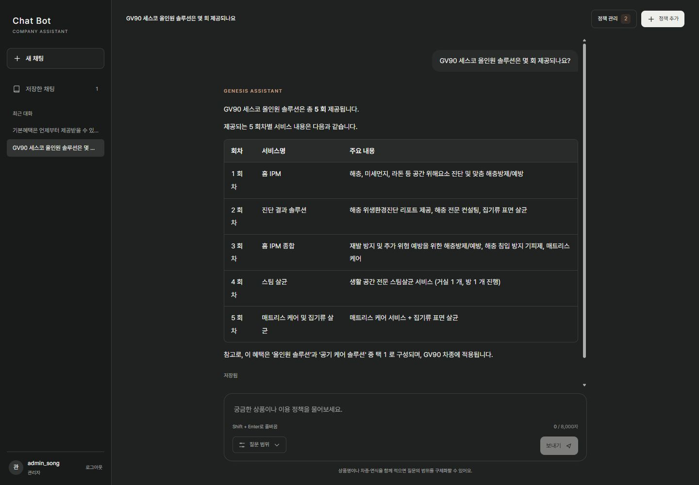

가상 데이터 · 실제 구현 화면
가상 데이터 · 실제 구현 화면SERVICE PLANNING · AX · INTERACTIVE EXPERIENCE
업무를 설계하고,
경험을 만듭니다.
실제 문제에서 출발한 업무 도구와 서비스,
그리고 플레이로 완성한 게임 프로젝트를 소개합니다.
기획 · 구현 · 검증으로 연결한 프로젝트 기록전체 화면과 자료 펼쳐 보기 ↗
AX & AI WORKFLOW
업무의 판단을 돕는 도구.
AI의 역할과 사람의 통제를 함께 설계합니다.
가상 데이터 · 실제 구현 화면
실제 서비스 원본 화면SERVICE & OPERATIONS
일상과 운영을 잇는 서비스.
회원과 관리자, 기록과 후속 행동을 연결합니다.

HOW I WORK
화면 앞의 문제부터,
운영 뒤의 예외까지.
문제를 정의하고, 사용자 흐름과 상태·정책을 정리합니다.
동작하는 형태로 구현한 뒤 확인한 범위와 남은 검증을 구분합니다.